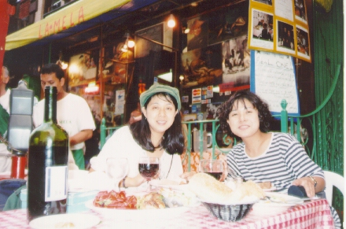

ニューヨーク・リトルイタリー (96.8)
妹と

|
去年の夏、妹夫婦がここに遊びに来ました。二人の仕事の都合で1週間しか休みをとれなかったので、ニューヨークに３日、私の地元に３日、移動１日くらいとしました。 私は最初、妹夫婦の性格を忘れていて、観光（景色をみたりする）を中心に計画していました。もともと美術館は彼らも好きですが、私はあまり買い物が好きではないこともあり、ショッピングは１日くらいで十分だろう、と踏んでいました。二人ともイラストレーターなので、「普段身体を動かすことがなく疲れやすくなっているからあまりハードなスケジュールにしないように」と母の注意があり、それなら買い物は疲れるから省こう、などと思っていたのは大間違い。二人は大の買い物好き。買い物をはじめると疲れもふっとぶそうです。 ソーホーは大の彼らのお気に入りになったようです。買い物もできるし画廊もある。ニューヨークはセンスもいいそうです。私はそれまで、目的があればチャイナタウンへ行って安い買い物をするくらいで、ソーホーにはあまり気をとめたことがありませんでした。でも確かに好きな人は好きなようですね。いろんな種類のお店があるし、服や雑貨など、盛りだくさんです。私も一緒についてまわったのですが、他の場所とは逆で私が一番疲れてしまいました(^^ゞ。 そして一日では足りないということになり、もう一日かけることになりました。帰ってから妹が絵入りの旅行記を送ってくれたのですが、その中で『ここで私は物欲の鬼と化してしまった！後悔はしたくないと、気に入ったものはばんばん買って。アメリカに私ぐらいむけの小さいサイズがあるのって、新発見。みんな服、高級品じゃないけど楽しいの』。私は「今、たくさん買っておけばあと半年くらいは何も買う必要がなくなるから買っちゃいなよ」と勧めたのですが、逆にあと半年も買い物ができなくなるのは嫌なので、今おさえておこうか迷ったそうです(^^;。 さて、買い物も終わり、夕食は近くのリトルイタリーでとることになりました。夏なので、テラスで食事ができます。また、ここは緯度が高いので夜も９時くらいまで日は落ちません。リトルイタリーのほどよい雑踏の中で食事です。妹の日記では『なんか、イタリアって行ったことないけど、こんな感じなんだろーなーって思わされてしまった。みんな陽気で。活気があるの。ウェイターが色々と話かけてくるし（私とＳ（だんな）には全くわからず）。すぐ隣はリトルチャイナなんだけど、チャイナタウンは、逆に、結構さつばつとした感じ。別の意味で活気はありそうだけど』 これがその時の写真です。撮影は妹のだんなさん（真二さん）です。 |

=ニューヨーク リトルイタリーで、妹・祐子と(96.8)=
|
『この店にはメニューもなく、適当に選んだ。最初、２皿がきて、かなりこってりしてたし、これで終わりだろう、と思ったら、、、！！メインディッシュがどーんと。。。ごめんなさい、残しちゃいました』そうなのです。私たちが選らんだのは一番小さなもの。最初の２品は、前菜で「トマトや玉ねぎのはいったサラダ（マリネ）」「パテみたいのとか野菜をいためたもの」そして「いろいろな種類のパスタ」です。妹の書いたイラストを見せられなくて残念。かなりのボリュームがあって、びっくりしました。 『ウェイターがあれこれ話しかけてきて、Ｓが最後にトイレに行っている間に「店が終わったら一緒に飲みに行かないか」だって。さすがイタリア人』確かにここでは絶対誘われると思って間違いないかも。ただし、（どんな人か覚えていなかったのですが）、妹のイラストによるとウェイターは赤ら顔の太めのおじさん。あまり期待しない方がいいかも。。(^^;。。 リトルイタリーにくればどこでもこんな感じで、すごく活気があります。道の反対側では子どもたちが爆竹のようなものをやっていて、通りを歩く人が踏んでびっくりするのを楽しんでいました。子どもたちも人を見ているようで、怒らなそうな人がくる時にしか爆竹（のようなもの）をまかずに、踏んだ人もわざと驚いたりして楽しんでいたみたい。 |
[ホームへ] [写真一覧へ]